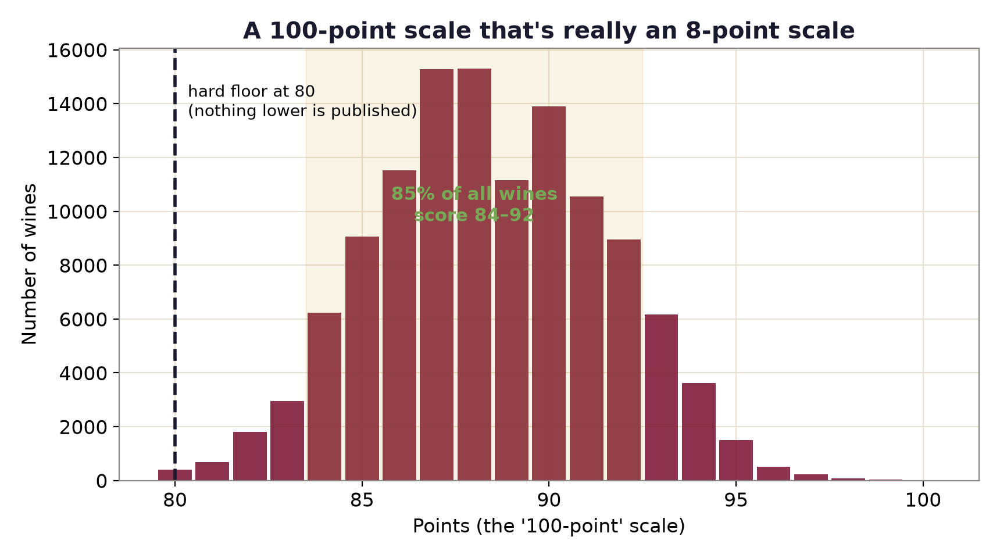
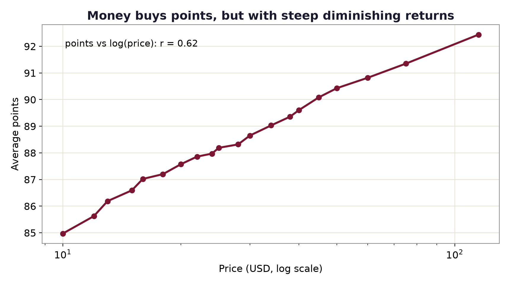
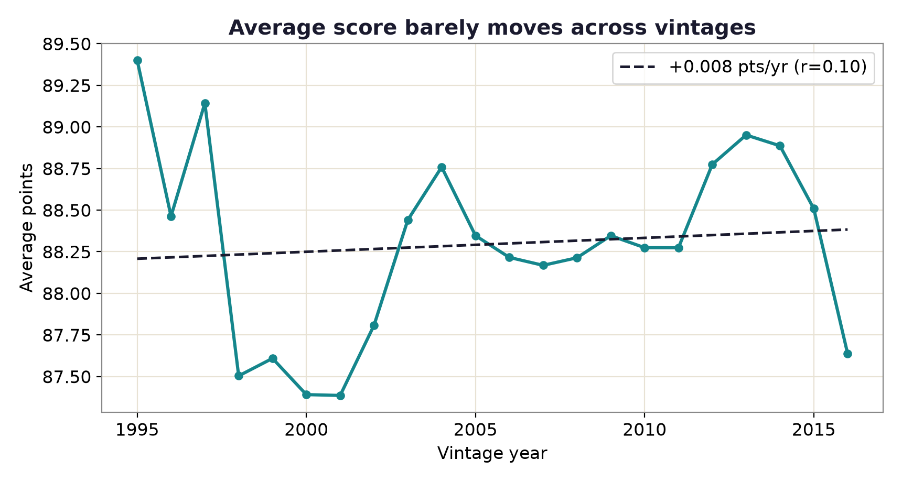
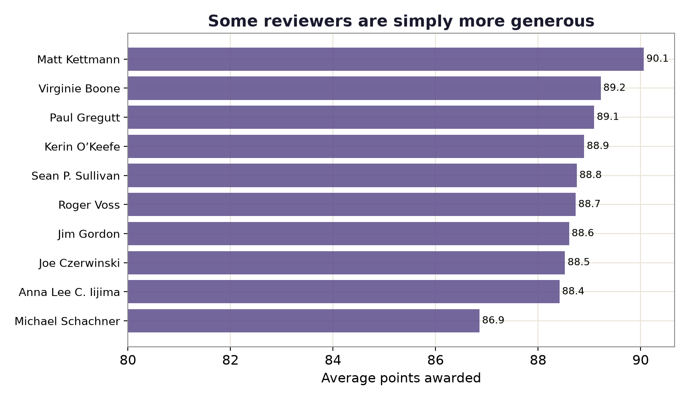

A data story on 129,971 Wine Enthusiast reviews
Nothing is published below 80, and 85.7% of all wines score between 84 and 92.
The lowest score in the dataset. The bottom four fifths of the scale are never used.
of wines score between 84 and 92. The mean is 88.45 and the median is 88.
between points and log price. Wines near $10 average 85.3 points and wines near $100 average 91.9.
between the most and least generous of the ten most prolific tasters (86.9 against 90.0), about half of what a tenfold price step buys.
First
The scores form a narrow hump that starts at a cliff. No review below 80 is published, which is the magazine's editorial choice. When the bottom of a scale is never printed and most wines fall in an eight-point band, a 90 tells you less than it seems to.

Second
Points correlate with log price at r = 0.61. Going from about $10 to about $100 raises the average from 85.3 to 91.9, a gain of 6.6 points, and the curve flattens after $100. The cheap end of the market is where each dollar buys the most points.

Third
If newer wines were scored more kindly, average points would climb with vintage. From 1995 to 2016 the fitted slope is 0.09 points per decade, close to flat. The compression is in how the scale is used.

Fourth
Among the ten tasters with the most reviews, average scores run from 86.9 to 90.0. That 3.1-point spread is more than a third of the band where most wines sit.

Treat the number as a coarse signal. The gap between an 88 and a 90 is about the same size as the gap between two tasters, so it says little on its own. If you shop for value, the low end of the price curve is where points are cheapest.
The public winemag-data-130k-v2 Wine Enthusiast dataset (Kaggle, downloaded from a GitHub mirror), 129,971 reviews. Vintage is parsed from each wine's title.
Limitation: this is one snapshot from one publication with no review dates, so it cannot measure scores drifting upward over time. The inflation measured here is structural: an 80 floor, a narrow band, and the price, vintage and taster effects inside it. Reproduce with fetch_data.py and analyze.py in the repo.